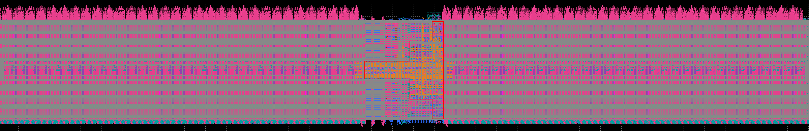

sramforge
open source, every step
A memory compiler for a
7 nanometre
process
Three parameters in, a verified memory macro out.
1.94
gigahertz
114,454
transistors accounted for
1 to 8
kilobytes

a generated bank, as laid out